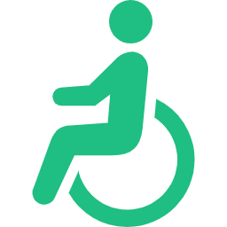
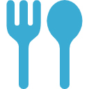
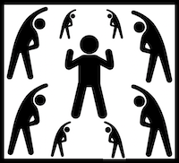
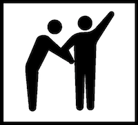
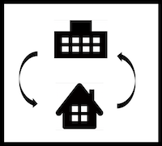
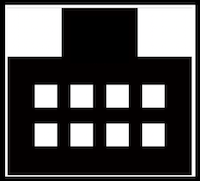
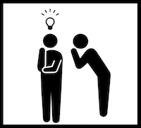

社会資源データを
読み込んでいます...
浜松市防災マップ
メニュー
トップページ
社会資源一覧ページ
浜松市防災マップ
いなさみどりバス
閉じる
「できること検索」を開閉する
買い物
集う
気分転換
体を動かす
刺激を受ける
食事
介護・医療サービスを利用する
薬局
デイ
ヘルパー
ショート
入所施設
就労支援
相談窓口
出かける
ボランティア
すべてにチェック
すべてのチェックを外す
検索する
現在地を取得
アイコンの凡例を表示
7種類の社会資源アイコンはこちら
薬局
介護サービス事業所
障害サービス事業所
喫茶店・カフェ・カラオケ
サロン
商店
ボランティア
「介護・医療サービスを利用する」のアイコンはこちら
高齢者の方が主に利用
障害者の方が主に利用
デイ
ヘルパー
ショート
入所施設
就労支援
相談窓口
閉じる